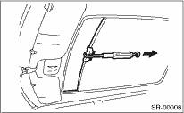

SUNROOF/T-TOP/CONVERTIBLE TOP (SUNROOF) > Sunroof Assembly
1. CHECK FOR MOVING LOAD OF SUNSHADE
1. Attach a spring scale to sunshade edge using a cloth.

2. Pull the spring scale to measure moving load of the sunshade.
Moving load of sunshade:
25 N (2.5 kgf, 5.5 lb) or less
NOTE:
Moving load is larger at the beginning of pulling a spring scale, so take a spring scale reading while sunshade sliding smoothly.
3. If moving load exceeds specifications, check the sunroof lid, sunshade, deflector and sunroof frame for improper installation.